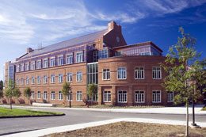

Contact Us:

Thayer School of Engineering at Dartmouth
8000 Cummings Hall, Hanover, NH 03755-8000
Phone: 603-646-2230, Fax: 603-646-3856
Email: Thayer.Receptionist@Dartmouth.edu
August 22, 2008 Symposium
Directions & Accomodations:
Directions to Dartmouth & Thayer School of Engineering as well as information for visitors about local accomodations can be found at:
http://engineering.dartmouth.edu/about/directions.html
and at: http://www.dartmouth.edu/~maps/
Symposium Parking:
Please Park at the Dewey Parking Lot
(down the street behind Dartmouth Med School) Shuttles are available
Symposium Parking for Speakers, Exhibitors, and Honored Guests:
As Speakers, Exhibitors, and Honored Guests, you may park in the lot next to the Engineering School- if you come down Tuck Drive you will pass Thayer Engineering School on your right and will drive straight into the lot -there is a sign with a green square that says "Cummings Lot" and this is the most convenient place.
Once you enter the main doors of the new building-MacLean- (which is on the left but connected to the old building, Cummings) there is a reception desk. If you arrive before the receptionist does, there will be a sheet to write down the information about your car so you dont get ticketed. (If she is there, then you can give the information to her.)
Registration will be up the stairs to your right facing the reception desk from the entrance.
Please Contact for Information about the new 2008 website & Events:
Additional Contacts:
Thayer School Administration: Karen.Thurston@Dartmouth.EDU
phone: 603-646-3276
Steering Committee Contact: Joseph.M.Rosen@Dartmouth.EDU
An earlier conference on the subject of Polytrauma took place at Dartmouth from December 3rd to December 5th, 2006.
Please review Conference web pages (under construction)